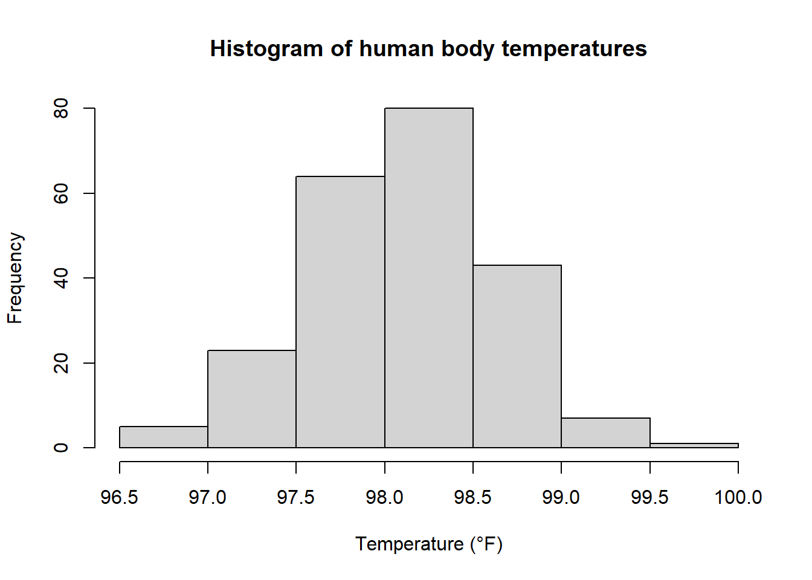

Chapter 9 Goodness of fit and association
9.1 Introduction
This week we formulate hypothesis tests for association or to evaluate model fit. We will interpret the results of any such test and describe the nature of any association between two factors defining a contingency table. We will recognise the form of a multinomial distribution and compare this to known discrete distributions. In further work we will carry out a chi-squared goodness of fit test for most of the distributions we have learned about previously.
There are two main situations when a \(\chi^2\) significance test is used:
- A \(\chi^2\) goodness-of-fit test
In this test we may have some practical data and you want to know how well a particular statistical distribution, such as a binomial or a normal, models that data. The null hypothesis will be to assume the data follows that particular distribution.
- A \(\chi^2\) test for association (or independence)
This is used when you have some practical data concerning two variables and you want to know whether they are independent or whether an association exists between the two. The null hypothesis here will be that the factors are independent.
Following the process of hypothesis tests previously established, we will assume a null hypothesis and calculate the expected frequencies which are then compared to that which is observed in the data. A test statistic involving the expected and observed frequencies is calculated and compared to an appropriate critical value of a \(\chi^2\) distribution.
9.1.1 Measuring discrepancy
Suppose we roll an apparently normal and fair six-sided die \(60\) times, and obtain the following frequencies:
| Outcome | 1 | 2 | 3 | 4 | 5 | 6 |
|---|---|---|---|---|---|---|
| Observed frequency | 4 | 7 | 16 | 8 | 8 | 17 |
What do you notice about these numbers?
In this sample (of possible results from rolling the die) there seems to be a rather large number of \(3\)s and \(6\)s. Is the die fair or is it biased?
With a fair die the probability of each outcome is \(\frac{1}{6}\). With \(60\) tosses the expected frequencies would each be \(\frac{1}{6}\times 60=10\).
| Outcome | 1 | 2 | 3 | 4 | 5 | 6 |
|---|---|---|---|---|---|---|
| Expected frequency | 10 | 10 | 10 | 10 | 10 | 10 |
The question is whether the observed frequencies and the expected frequencies are reasonably close or unreasonably different. We add the differences to our table:
| Observed frequency, \(O\) | 4 | 7 | 16 | 8 | 8 | 17 |
|---|---|---|---|---|---|---|
| Expected frequency, \(E\) | 10 | 10 | 10 | 10 | 10 | 10 |
| Difference \(O-E\) | -6 | -3 | 6 | -2 | -2 | 7 |
The larger the magnitude of the differences, the more the observed data differs from that expected from the model (a fair die).
Suppose now we roll a second die \(660\) times. What would be the expected here? Suppose we obtain the following results:
| Outcome | 1 | 2 | 3 | 4 | 5 | 6 |
|---|---|---|---|---|---|---|
| Observed frequency | 104 | 107 | 116 | 108 | 108 | 117 |
| Expected frequency | 110 | 110 | 110 | 110 | 110 | 110 |
| Difference \(O-E\) | -6 | -3 | 6 | -2 | -2 | 7 |
This time the observed values seem remarkably close, yet the difference \(O-E\) values are the same as before. It is not just the sizeof \(O-E\) that matters, but also its size relative to the expected frequency:
\[\frac{O-E}{E}\] Combining the ideas that both the absolute ‘difference’ and the ‘relative size’ matter suggests using the product
\[(O-E)\times\frac{(O-E)}{E} = \frac{(O-E)^2}{E}.\] An aggregate measure of the goodness of fit is the measure
\[X^2 = \sum_{i=1}^m \frac{(O_i-E_i)^2}{E_i}\]
where \(m\) is the number of different outcomes.
9.2 Contingency tables and association
In its simplest form a contingency table consists of a two-way table of counts or frequencies. The rows and columns of the table are often referred to as factors. We begin by revising independent events for two way tables.
Example 9.1 We have taken a random sample of \(310\) graduates six months after graduation and information on their course (Bachelor of Arts BA, or Bachelor of Science BSc) and employment status is presented below.
| Full-time employed | Postgraduate studies | Temporary employment | |
|---|---|---|---|
| BSc | 100 | 33 | 25 |
| BA | 90 | 40 | 22 |
Work out \(\text{P}(\text{Full-time employed})\)
Work out \(\text{P}(\text{earned a BSc})\)
Are the events \(\{\text{Full-time employed}\}\) and \(\{\text{earned a BSc} \}\) independent?
solution
- \(190/310=0.613\)
- \(158/310 = 0.510\)
- For independence of events \(A\) and \(B\) we would require \[\text{P}(A\cap B)=\text{P}(A)\times\text{P}(B).\] The intersection has probability \(100/310 = 0.323\). The product of the answers in (a) and (b) give \[\frac{190}{310}\times\frac{158}{310}= 0.313\].
The answer is that they are not independent, but it is quite close!
Instead of testing if each event in the columns is independent of each event in the rows we can do a test to see if the column factor as a whole is independent of, or associated to, the row factor.
The test statistic used in this situation is known as the chi-squared statistic and we test between the hypotheses.
\[\text{H}_0: \text{ There is no association between employment status and degree type}\] \[\text{H}_A: \text{There is an association between employment status and degree type}\]
It will be helpful to consider the table with totals in:
| Full-time employed | Postgraduate studies | Temporary employment | Total | |
|---|---|---|---|---|
| BSc | 100 | 33 | 25 | 158 |
| BA | 90 | 40 | 22 | 152 |
| Total | 190 | 73 | 47 | 310 |
We need to consider what we would expect the counts to be would be if there were indeed no association between the two factors. Recall the following about expected totals.
Example 9.2 If I toss a fair coin \(100\) times, how many do I expect to be tails?
solution
\(100 \times 0.5=50\)
In the example above, \[\text{Expected number} = \text{Total} \times \text{Probability}.\]
Suppose my table is like this:
| Full-time employed | Postgraduate studies | Temporary employment | Total | |
|---|---|---|---|---|
| BSc | \(E\) | Row Total | ||
| BA | ||||
| Total | Column Total | Grand Total |
If the events \(\{\text{Full-time employed}\}\) and \(\{\text{earned a BSc} \}\) are independent then what can be said about \(E\)? Well, it is the grand total multiplied by the probability of being in this cell. Assuming independence we get:
\[E = \text{Grand Total} \times \frac{\text{Row Total}}{\text{Grand Total}}\times \frac{\text{Column Total}}{\text{Grand Total}}\] \[= \frac{\text{Row Total}\times\text{Column Total}}{\text{Grand Total}}\] Using this formula we can work out the expected (E) values for every entry in the table
| Full-time employed | Postgraduate studies | Temporary employment | ||
|---|---|---|---|---|
| BSc | 96.84 | 37.21 | 23.95 | |
| BA | 93.16 | 35.79 | 23.05 |
We then calculate the statistic:
\[X^2 = \frac{(100-96.84)^2}{96.84}+\frac{(33-37.21)^2}{37.21} + \frac{(25-23.95)^2}{23.95}+\ldots+\frac{(22-23.05)^2}{23.05}\] \[=0.103 + 0.476 + 0.046 + 0.107 + 0.494 + 0.047\] \[=1.273\] We need to compare this test statistic to the \(95^{\text{th}}\) percentile of a suitable \(\chi^2\) distribution.
As the column sums and row sums are constrained, the number of degrees of freedom is given by, number of columns minus one multiplied by the number of rows minus one. That is
\[\nu = (r-1)\times(c-1)\] Here that is \(\nu = (2-1)\times(3-1) = 2\). The critical value is then \(\chi^2_{2, 95\%}=5.99\). We have \(1.273 \ngtr 5.99\), so there is insufficient evidence to say that there is an association between the degree type and employment status.
9.3 Goodness of fit
9.3.1 Discrete uniform test
We can formally test when all the outcomes are equally likely using a chi-squared test as in the following example.
Example 9.3 The table shows the number of employees absent for just one day during a particular period of time in a large company.
| Weekday | Mon | Tues | Wed | Thurs | Fri |
|---|---|---|---|---|---|
| Number of absentees | 121 | 87 | 87 | 91 | 114 |
Calculate the expected frequencies according to the hypothesis that the number of absentees is independent of the day of the week.
Test at the \(5\%\) significance level whether teh differences in the observed and expected data are significant.
solution
- The hypotheses are
\[\text{H}_0: \text{The number of absentees is independent of the day of the week}\] \[\text{H}_A: \text{The number of absentees is not independent of the day of the week}\] If \(\text{H}_0\), then the chance of being absent on any given weekday is \(\frac{1}{5}\). The total number of days absent in the table is \(500\). Therefore the expected number of absentees on any given day is \[\frac{1}{5}\times 500 = 100.\] b) The number of degrees of freedom is the number of classes minus the number of restrictions on the numbers in the table (one restriction \(\sum E= 500\)) \[\nu=5-1=4\] So we will get the critical value from \[\chi^2_{n-1, \ 95\%} =9.488\] Now calculate the test statistic \(X^2\), via tabulating the contributions.
| \(O\) | \(E\) | \(\frac{(O-E)^2}{E}\) |
|---|---|---|
| 121 | 100 | 4.41 |
| 87 | 100 | 1.69 |
| 87 | 100 | 1.69 |
| 91 | 100 | 0.81 |
| 114 | 100 | 1.96 |
\[X^2 = 10.56\] \[X^2 = 10.56 > 9.488\] Reject \(\text{H}_0\), and conclude that there is sufficient evidence that the number of absentees on a day is not independent of the day of the week.
Note the test does not tell us the nature of the failure of independence.
What are the biggest contributions to the statistic, and what do they tell us?
Notes: - The \(O_i\) are observed frequencies and are always whole numbers. - the \(E_i\) will not usually be whole numbers. - Rounding errors can accumulate so it is advisable to use more decimal places than usual in \(X^2\) calculations. - A \(\chi^2\) test is always right tailed. We add up positive contributions until over the critical threshold, where we reject \(\text{H}_0\).
9.3.2 Prescribed probabilities
When we tested the digits were random, we used the discrete uniform probabilities to calculate the expected numbers. However, we can perform a chi-squared test when the probabilities are specified in any number of categories.
Example 9.4 In experiments in pea breeding Gregor Mendel (the father of modern genetic theory) obtained the following data relating to \(556\) pea plants.
| Round and Yellow | Wrinkled and Yellow | Round and Green | Wrinkled and Green |
|---|---|---|---|
| 315 | 101 | 108 | 32 |
According to Mendel’s theory, the expected figures should be in the ratio \(9:3:3:1\).
Test at the \(10\%\) significance level whether the theory is contradicted.
solution
\[\text{H}_0: \text{The different types of peas occur in the ratio 9:3:3:1}\] \[\text{H}_A: \text{The different types of peas do not occur in this ratio}\]
Calculate the table
| Round and Yellow | Wrinkled and Yellow | Round and Green | Wrinkled and Green | |
|---|---|---|---|---|
| Observed (O) | 315 | 101 | 108 | 32 |
| Exected (E) | 312.5 | 104.25 | 104.25 | 34.75 |
There are four classes and one restriction so \[\nu = 4-1=3\] And the critical value is
\[\chi^2_{3, \ 90\%} = 6.251\] A table of contributions is:
| \(O\) | \(E\) | \(\frac{(O-E)^2}{E}\) |
|---|---|---|
| 315 | 312.75 | \(0.161\ldots\) |
| 101 | 104.25 | \(0.101\ldots\) |
| 108 | 104.25 | \(0.134\ldots\) |
| 32 | 34.75 | \(0.217\ldots\) |
The total \(X^2 = 0.470\)
\[0.47 < 6.251\] Insufficient evidence to reject \(\text{H}_0\), or the data is consistent with \(\text{H}_0\). Therefore we can conclude that the observed frequencies are consistent with the ratio given by genetic theory. The calculated value of \(X^2\) is very small indeed, suggesting very little discrepancy.
We have already seen in labs that we can do some hypothesis tests easily in R. You can do a \(\chi^2\) test in R using the command \(\texttt{chisq.test()}\)
##
## Chi-squared test for given probabilities
##
## data: peas
## X-squared = 0.47002, df = 3, p-value = 0.9254Which is the result we obtained previously. Recall we would reject if the p-value were lower than the significance level. Note the p-value is (very much) larger than \(5\%\), and so there is no evidence against then null hypothesis.
9.3.3 Small expected values
The distribution of our test statistic \(X^2\) is discrete as the numbers in any table could appear in a finite number of ways constrained by their sum.
Example 9.5 How many ways can I have a sum of three whole numbers \(n_1,n_2,n_3\) whose sum is \(5\)?
solution \((1,1,3)\) in \(3\) possible orders \((1,2,2)\) in \(3\) possible orders Altogether there are only \(6\) ways this can happen.
The \(\chi^2\) distribution is continuous, and the approximation becomes less and less accurate as the expected frequencies become smaller. The rule often stated for deciding whether the approximation is valid is All the expected frequencies must be greater than or equal to 5. If the original chosen categories lead to the expected numbers being less than \(5\), then it is necessary to combine categories together. With numerical data adjacent categories are combined in this way.
Example 9.6 A test of a random number generator is provided by studying the lengths of ‘runs’ of digits.
Work out the probability of a run of length \(k\) (i.e. that a random particular digit is followed by exactly \(k-1\) digits of the same).
If \(X\) is a random variable equal to the length of a run, what distribution does \(X\) follow?
A sequence of supposedly random numbers are generated and the following table is obtained:
| Length of run | 1 | 2 | 3 | 4 | 5 | 6 or more |
|---|---|---|---|---|---|---|
| Frequency | 8083 | 825 | 75 | 9 | 1 | 0 |
Use a \(10\%\) significance level to test whether these results suggest there is anything wrong with the random number generator.
solution
A run of length \(k\), a given digit must must be followed by \(k-1\) digits each has probability \(0.1\). The final digit is different from the previous \(k\), so has probability \(0.9\). Altogether \[ \text{P}(X=k) = 0.9\times 0.1^{k-1}\]
This is a geometric distribution with success probability \(0.1\).
We need to work out the probability of each category in the table first.
\[\text{P}(X=1) = 0.9\] \[\text{P}(X=2) = 0.9\times0.1 = 0.09 \] \[\text{P}(X=3) = 0.009\] \[\text{P}(X=4) = 0.0009\] \[\text{P}(X=5) = 0.00009\] \[\text{P}(X>6) = 1- (0.9+0.09+0.009+0.0009+0.00009) = 1\times10^{-5}\] The total frequency is \(8993\). To work out the expected we multiply the probability by this total frequency.
| Length of run | 1 | 2 | 3 | 4 | 5 | 6 or more |
|---|---|---|---|---|---|---|
| Probability | 0.9 | 0.09 | 0.009 | 0.0009 | 0.00009 | 10^{-5} |
| Expected | 8093.700 | 809.370 | 80.937 | 8.094 | 0.809 | 0.090 |
The last three categories must be combined here:
| Length of run | 1 | 2 | 3 | 4 or more |
|---|---|---|---|---|
| Probability | 0.9 | 0.09 | 0.009 | 0.001 |
| Expected | 8093.700 | 809.370 | 80.937 | 8.993 |
Now we use the number of categories after combining is \(4\), so \(\nu = 4-1=3\) and we will use the critical value \[\chi^2_{3 , \ 90\%}= 6.251\] A table of contributions is:
| \(O\) | \(E\) | \(\frac{(O-E)^2}{E}\) |
|---|---|---|
| 8083 | 8093.700 | 0.014 |
| 825 | 809.370 | 0.302 |
| 75 | 80.937 | 0.435 |
| 10 | 8.993 | 0.113 |
The total is \(X^2 = 0.864\)
Comparison: \(0.864\ngtr 6.251\).
There is no significant evidence for rejecting the null hypothesis here.
9.3.4 Goodness of fit tests to discrete distributions
We have already seen how we can test if data fits a distribution of outcomes being equally likely, a discrete uniform distribution, or if the data fits a distribution with some outcomes being more likely than others according to some mass function. Here we will test for some named distributions from earlier sections.
If we have to estimate a parameter of the distribution this is a further constraint from the data, so in general we subtract one degree of freedom for each parameter we estimate. If we do not have to estimate a parameter, then it is one less than the number of categories (after possibly combining where expected is less than \(5\)).
Example 9.7 Eggs are packed in boxes of \(6\). On arrival at a supermarket each pack is inspected by a robot with lasers to make sure that no eggs are broken. The robot records the number of broken eggs in a pack. After examining \(5000\) egg packets the data is tabulated as follows:
| Number of broken eggs | 0 | 1 | 2 | 3 | 4 | 5 |
|---|---|---|---|---|---|---|
| Number of packs | 4704 | 273 | 22 | 0 | 0 | 1 |
Let \(X\) be the number of broken eggs in a box. Explain why it may be suitable to model \(X\) with a binomial distribution.
Test whether these results are consistent with the data being modelled by a binomial distribution \(\text{Bin}(6,p)\) where \(p\) is estimated from the data.
solution
PINT
The hypotheses are \[\text{H}_0: \text{Bin}(6,p) \text{ is a good fit}\] \[\text{H}_A: \text{Bin}(6,p) \text{ is not a good fit}\]
We can estimate the probability of a single egg being broken in two ways. One way is to note there are \(5000\times 6 = 30000\) eggs of which \(322\) are recorded as broken, hence \[\hat{\pi}=322/30000=0.01703\ldots\]
Another way is to use the null hypothesis, the mean of the Binomial distribution is \(n\pi = 6p\) on the other hand the mean from the table is \(\bar{x}= 0.0644\), equating the two gives:
\[6p=0.0644\] which gives the same answer. Once we have the parameter \(p\) we can evaluate \(\text{P}(X=0),\text{P}(X=1)\ldots ,\text{P}(X=6)\) using the pmf of the binomial distribution.
The \(X^2\) calculations proceed as usual. In this case the last five categories combine to ‘2 or more’.
| Broken | \(O_i\) | Probability | \(E_i\) |
|---|---|---|---|
| 0 | 4704 | 0.93730 | 4686.518 |
| 1 | 273 | 0.06102 | 305.086 |
| \(\geq 2\) | 23 | 0.00168 | 8.396 |
After combining we have \(3\) categories. We also estimated one parameter.
The degrees of freedom are then \(\nu = 3-1-1 = 1\).
The critical value is from a \(\chi^2_1\) distribution. It can be seen from tables that the p-value is less than \(0.1\%\). Here we reject \(H_0\) and conclude a binomial distribution is not a good fit to the data.
From the contributions to the \(X^2\) statistic, can you elaborate as to why?
There were far more than expected packs containing two or more broken eggs, it is likely that egg breakages are not independent, but may be caused by whole packs being dropped or other accidents.
Example 9.8 An analysis of the number of goals scored by the local football team in their last \(100\) matches gave the following results:
| Goals per match | 0 | 1 | 2 | 3 | 4 | 5 | 6 | 7 |
|---|---|---|---|---|---|---|---|---|
| Number of matches | 14 | 18 | 29 | 18 | 10 | 7 | 3 | 1 |
State the assumptions of modelling this data with a Poisson distribution
Carry out a \(\chi^2\) goodness of fit test at the \(10\%\) significance level to determine whether or not the above distribution can be reasonably modelled by a Poisson distribution with parameter \(2\).
SIR,MR
If \(X\) is the number of goals scored in a match:
\[\text{H}_0: \text{Pois(2)} \text{ is a good fit}\] \[\text{H}_A: \text{Pois(2)} \text{ is not a good fit}\] To calculate the probabilities \(\text{P}(X=x)\) for \(x=0,1,2,\ldots\) we can use the PD function for most of these.
For a Poisson distribution there is no theoretical maximum number of goals, even though \(7\) was the observed largest number, so we must account for this uncertainty in the tail of the distribution. Hence only for the last one we use the CDF function and calculate \(\text{P}(X\geq 7)\) (and we know to use the CDF as \(1-\text{P}(X\leq 6)\)).
The table is as follows:
| Probability | Expected \(= 100 \times\)Probability |
|---|---|
| \(\text{P}(X=0) = 0.1353\) | 13.53 |
| \(\text{P}(X=1) = 0.2707\) | 27.07 |
| \(\text{P}(X=2) = 0.2707\) | 27.07 |
| \(\text{P}(X=3) = 0.1804\) | 18.04 |
| \(\text{P}(X=4) = 0.0902\) | 9.02 |
| \(\text{P}(X=5) = 0.0361\) | 3.61 |
| \(\text{P}(X=6) = 0.0121\) | 1.21 |
| \(\text{P}(X\geq7) = 1- 0.9955 = 0.0045\) | 0.45 |
We must combine the last three categories to be ‘\(5\) or more’. The revised table for observed and expected is:
| \(O\) | \(E\) | \(\frac{(O-E)^2}{E}\) |
|---|---|---|
| 14 | 13.53 | 0.016 |
| 18 | 27.07 | 3.038 |
| 29 | 27.07 | 0.137 |
| 18 | 18.04 | 0.000\(\ldots\) |
| 10 | 9.02 | 0.106 |
| 11 | 5.27 | 6.23 |
Finding the sum gives \(X^2 = 9.529\)
There are \(6\) classes after combining, so the degrees of freedom \(\nu = 6-1 =5\). The critical value is therefore \(\chi^2_{5, \ 90\%} = 9.236\).
Here we have \(X^2 = 9.529 > 9.236\), so we reject the null hypothesis. We conclude the number of goals per match cannot be modelled by a Poisson distribution with parameter \(2\).
Was it far off? How could we improve the model?
Example 9.9 Can the data from the previous example be modelled by a Poisson distrubtion with some appropriate parameter?
Recall for a Poisson distribution the mean is equal to the rate parameter. That is if \(X\sim \text{Pois}(\lambda)\) then \(\text{E}(X)=\lambda\). The estimate of the mean is \(\bar{x} = 2.3\) from the table (can be found by putting the original table into a calculator).
\[\text{H}_0: \text{Pois(2.3)} \text{ is a good fit}\] \[\text{H}_A: \text{Pois(2.3)} \text{ is not a good fit}\] The table of probabilities and expected values becomes:
| Probability | Expected \(= 100 \times\)Probability |
|---|---|
| \(\text{P}(X=0) = 0.10025\) | 10.03 |
| \(\text{P}(X=1) = 0.2306\) | 23.06 |
| \(\text{P}(X=2) = 0.2652\) | 26.52 |
| \(\text{P}(X=3) = 0.2033\) | 20.33 |
| \(\text{P}(X=4) = 0.1169\) | 11.69 |
| \(\text{P}(X=5) = 0.0538\) | 5.38 |
| \(\text{P}(X=6) = 0.0206\) | 2.06 |
| \(\text{P}(X\geq7) = 0.0099\) | 0.99 |
We can combine the last three classes, and proceed to calculate \(X^2\)
| \(O\) | \(E\) | \(\frac{(O-E)^2}{E}\) |
|---|---|---|
| 14 | 10.03 | 1.571 |
| 18 | 23.06 | 1.110 |
| 29 | 26.52 | 0.231 |
| 18 | 20.33 | 0.267 |
| 10 | 11.69 | 0.244 |
| 11 | 8.43 | 0.783 |
Then the sum is \(X^2 = 4.208\).
The number of classes after combining is \(6\) and we estimated \(1\) parameter so we have the number of degrees of freedom as \(\nu=6-1-1 = 4\).
9.3.5 Goodness of fit tests to continuous distributions
As the chi-squared test uses counts, the data must be grouped in order to do a chi-squared test on continuous distributions,i.e. count how many data items lie inside a given interval. As such, there is a loss of accuracy, and in another course you may learn better tests to show data follow a particular distribution.
Suppose you have some data and you would like to test if this data follows a normal distribution. In order to summarise the data we will need to group it somehow, for example a histogram counts the number of data values that lie within an interval. There are a number of steps to follow:
Calculate (or estimate for grouped data) the sample mean \(\bar{x}\) and standard deviation \(s_x\) from the data. These become our estimated parameters for the normal distribution.
Standardise the endpoints of the intervals.
Evaluate the probability of lying within the standardised intervals using Z
Calculate the expected values by multiplying the total frequency by the probability of lying within the interval.
Perform the chi-squared test on these values
Ensure you subtract 2 from the degrees of freedom for having estimated two parameters of the normal distribution.
We will do an example in R.
Example 9.10 Recall the body temperature data from labs, which recorded the body temperature of \(223\) individuals in degrees Farenheit. Test at the \(5\%\) level whether the data can be modelled by a suitable normal distribution.
We first calculate the sample mean and standard deviation to hypothesise a distribution.
## [1] 98.16502## [1] 0.5273048So our hypotheses are
\[\text{H}_0: \text{N}(98.2,0.527^2) \text{ is a good fit}, \ \ \ \ \ \text{H}_A: \text{N}(98.2,0.527^2) \text{ is not a good fit}\]
We do not have intervals yet, but we can make some by getting R to draw a histogram. We could set our own intervals, or use the ones R gives us.
data <- read.csv("Bodytemp.csv")
h <- hist(data$Body_temp,
main = "Histogram of human body temperatures",
xlab = "Temperature (°F)")
## [1] 96.5 97.0 97.5 98.0 98.5 99.0 99.5 100.0## [1] 5 23 64 80 43 7 1So we can summarise the histogram as a table:
| Interval | Observed frequency |
|---|---|
| \(96.5\leq x < 97\) | 5 |
| \(97\leq x < 97.5\) | 23 |
| \(97.5\leq x < 98\) | 64 |
| \(98\leq x < 98.5\) | 80 |
| \(98.5\leq x < 99\) | 43 |
| \(99\leq x < 99.5\) | 7 |
| \(99.5\leq x < 100\) | 1 |
Now this table is for the distribution of body temperatures in question. We want to compare this to a normal distribution, and one way of doing so is to standardise the intervals and work out the areas of the standard normal between the standardised endpoints.
#standardising the endpoints
st_breaks <- (h$breaks - xbar)/sx
# creating a vector to store the probabilities in
probs <- vector(length = length(st_breaks)-1)
# A loop to calculate the probability between endpoints
for (i in 1:length(probs)){
probs[i] <- pnorm(st_breaks[i+1])-pnorm(st_breaks[i])
}
#changing the end probabilities to account for the tails
#see comment below
probs[1] <- probs[1] + pnorm(st_breaks[1])
probs[length(probs)] <- 1 - pnorm(st_breaks[length(probs)])
probs## [1] 0.013573730 0.090049579 0.273534295 0.360214167 0.205972393 0.050980284
## [7] 0.005675552However the intervals at either end must also account for the tail probabilities (just because the data ended there, does not mean that a smaller or larger value could not be observed in another sample, so it affects our expected calculation).
We get the following table of probabilities:
| Interval | Probability |
|---|---|
| \(96.5\leq x < 97\) | 0.01357 |
| \(97\leq x < 97.5\) | 0.09005 |
| \(97.5\leq x < 98\) | 0.27353 |
| \(98\leq x < 98.5\) | 0.36021 |
| \(98.5\leq x < 99\) | 0.20597 |
| \(99\leq x < 99.5\) | 0.05098 |
| \(99.5\leq x < 100\) | 0.00568 |
We then work out the expected numbers by multiplying by the total frequency:
## [1] 3.026942 20.081056 60.998148 80.327759 45.931844 11.368603 1.265648| Probability | Expected |
|---|---|
| 0.01357 | 3.026 |
| 0.09005 | 20.081 |
| 0.27353 | 60.998 |
| 0.36021 | 80.328 |
| 0.20597 | 45.932 |
| 0.05098 | 11.369 |
| 0.01110 | 1.266 |
Then we combine the categories where the expected is less than \(5\). You may have to do this ‘manually’:
E[2] <- E[1]+E[2] #combine 1st and 2nd expected no.s
E[6] <- E[7]+E[6] #combine 6th and last expected no.s
#Overwrite our E vector
E <- E[-c(1,7)] #get rid of 1st & last entries
E## [1] 23.10800 60.99815 80.32776 45.93184 12.63425# Do the same for the observed frequencies:
O <- h$counts
#same combining as for expected categories
O[2] <- O[1]+O[2] #combine 1st and 2nd expected no.s
O[6] <- O[7]+O[6] #combine 6th and last expected no.s
#Overwrite our E vector
O <- O[-c(1,7)] #get rid of 1st & last entries
O## [1] 28 64 80 43 8Now we redraw the combined table with the observed numbers to calculate the test statistic \(X^2\).
| 0 | E |
|---|---|
| 28 | 23.108 |
| 64 | 60.998 |
| 80 | 80.328 |
| 43 | 45.932 |
| 8 | 12.634 |
We can do this calculation using vectors in R. You may also find using a spreadsheet helps.
## [1] 3.071697## [1] 5.991465Here there are \(5\) categories after combining, and we estimated \(2\) parameters, so the degrees of freedom are given by \(\nu = 5-1-2=2\). Here the critical value is \(5.991465\). The test statistic has value 3.071697, so here we do not reject \(\text{H}_0\) and conclude that the data is consistent with a \(\text{N}(98.2,0.527^2)\) distribution.
Note if we combine the categories in the probability vector then R can do our test quickly as:
#same combining as for probability categories
probs[2] <- probs[1]+probs[2] #combine 1st and 2nd expected no.s
probs[6] <- probs[7]+probs[6] #combine 6th and last expected no.s
#Overwrite our E vector
probs <- probs[-c(1,7)] #get rid of 1st & last entries
probs## [1] 0.10362331 0.27353429 0.36021417 0.20597239 0.05665584##
## Chi-squared test for given probabilities
##
## data: O
## X-squared = 3.0717, df = 4, p-value = 0.5459This is a good check of our test statistic, however R does not know we combined the categories so the df are incorrect and so is the p-value.
9.4 Explanation of Statistic \(X^2\) (non-examinable)
This section aims to give some intuition for the question: why is the statistic \(X^2 = \sum_{i=1}^m \frac{(O_i-E_i)^2}{E_i}\) a \(\chi^2\) distribution?
Suppose in the simplest case we have just two outcomes to observe rather than many so we have a binomial distribution \(Y_1 \sim \text{Bin}(n,\pi_1)\) and \(Y_2 = n - Y_1\). Also \(\pi_2 = 1-\pi_1\).
The observed numbers of the two outcomes are \(Y_1\) and \(Y_2\), and their expected numbers are \(n\pi_1\) and \(n\pi_2\). We consider the quantity:
\[X^2 = \frac{(Y_1-n\pi_1)^2}{n\pi_1} + \frac{(Y_2-n\pi_2)^2}{n\pi_2}\] Using \(Y_2 = n - Y_1\) and \(\pi_2 = 1-\pi_1\) gives:
\[= \frac{(Y_1-n\pi_1)^2}{n\pi_1} + \frac{(n-Y_1-n(1-\pi_1))^2}{n(1-\pi_1)}\]
\[=\frac{(Y_1-n\pi_1)^2}{n\pi_1} + \frac{(Y_1-n\pi_1)^2}{n(1-\pi_1)}\] Collecting as a single fraction: \[=\frac{(Y_1-n\pi_1)^2(1-\pi_1)+(Y_1-n\pi_1)^2\pi_1}{n\pi_1(1-\pi_1)}\] \[=\frac{(Y_1-n\pi_1)^2}{n\pi_1(1-\pi_1)}\] Now we have
\[X^2 = \left( \frac{Y_1 - n\pi_1}{\sqrt{n\pi_1(1-\pi_1)}}\right)^2\] Recall for a binomial distribution that the mean is \(n\pi\) and the variance is \(n\pi(1-\pi)\). Here this means that inside the brackets we have a standardised distribution - that is, we have subtracted the mean and divided by the standard deviation. By the Normal approximation to the binomial distribution, we know that this will be approximately a normal distribution, but because it is standardised it will be \(\text{N}(0,1)\).
Also recall that the square of a standard normal \(Z^2 \sim \chi^2_1\). Therefore we have
\[X^2 = Z^2 \sim \chi^2_1\] When we had two outcomes and the statistic \(X^2\) followed a \(\chi^2_1\) distribution. For a distribution with \(k\) categories, when there are \(k\) outcomes, \(X^2\) will follow a \(\chi^2_{k-1}\) distribution.
9.5 Summary
9.5.1 Goodness of fit tests
A chi-squared test is always a right tailed test
The null hypothesis is always that the distribution is a good fit
Work out expected numbers by multiplying the probability by the total frequency.
\[E = \text{total}\times \text{P}(X=x)\]
you have to combine categories where the expected numbers are less than \(5\).
The number of degrees of freedom \(\nu = \text{no. categories after combining} - 1\)
If you have to estimate a parameter you need to subtract one from the degrees of freedom.
\[\nu = \text{no. categories after combining} - 1 - \text{no. parameters estimated}\]
9.5.2 Contingency tables
Here the null hypothesis is that there is no association.
The degrees of freedom is the one less than the number of columns multiplied by one less than the number of rows, after combining classes where \(E<5\). \[\nu = (c-1)(r-1)\]
To work out the expected you multiply row and column totals and divide by the grand total.